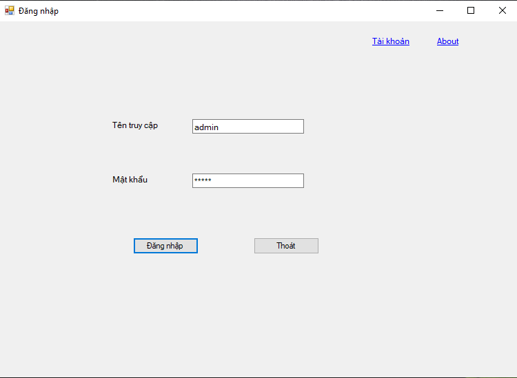
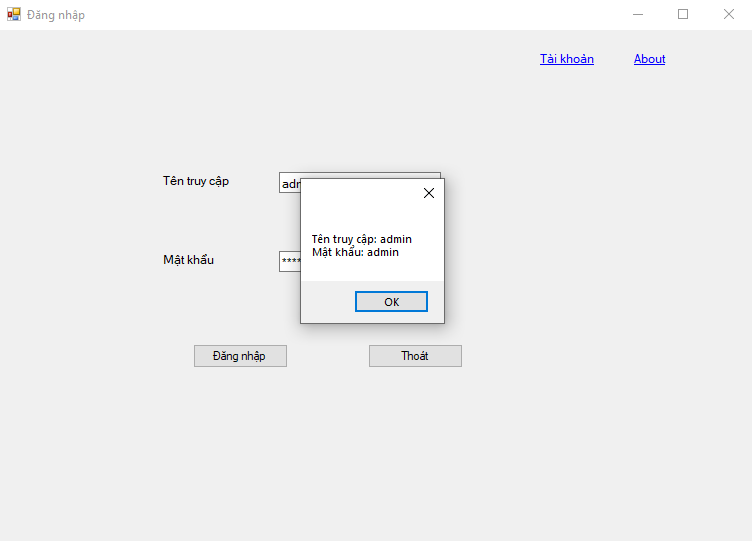
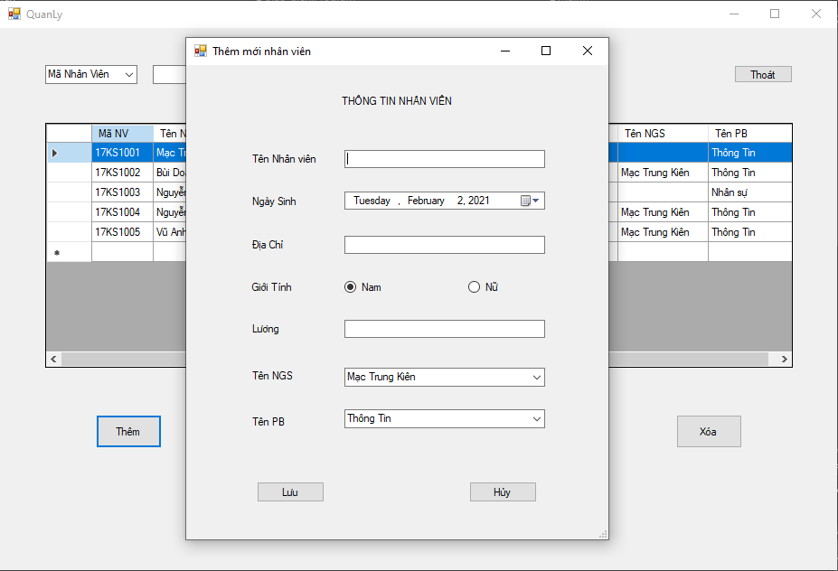
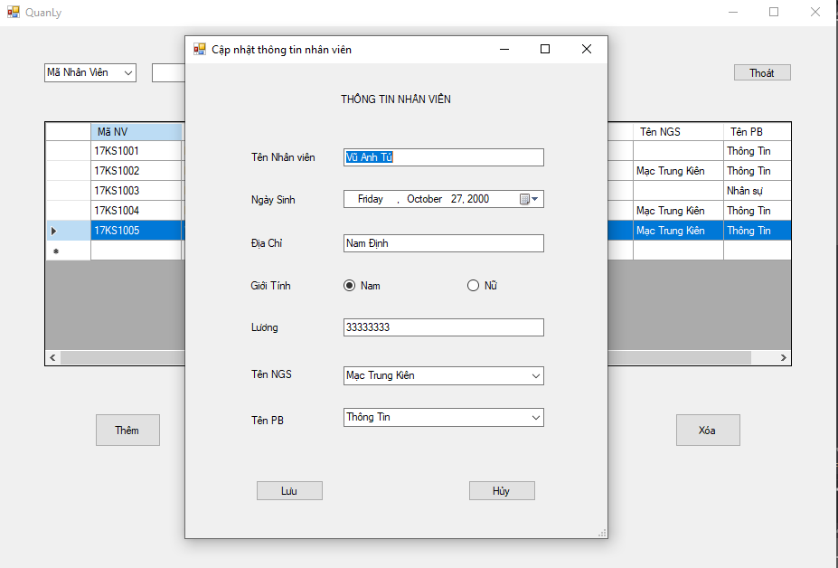
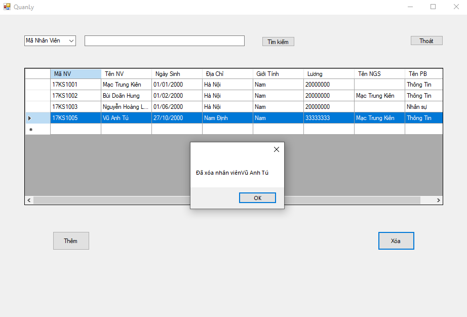
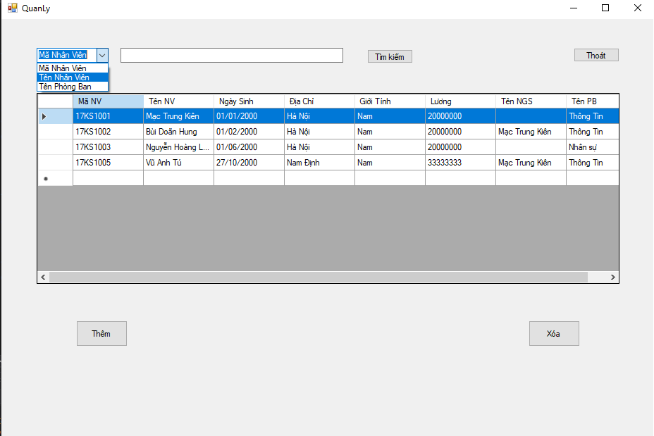
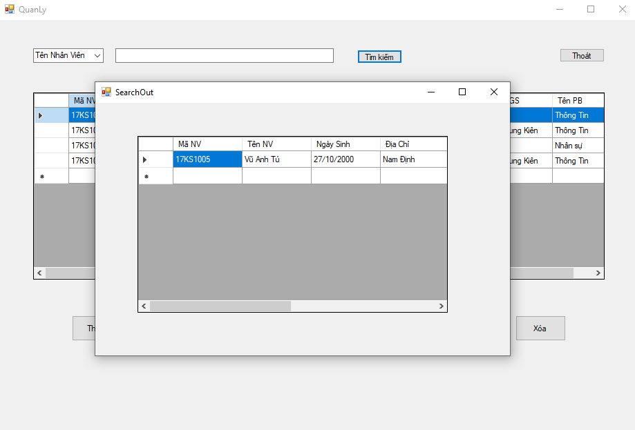

1. Sau khi mở ứng dụng sẽ hiện ra màn hình đăng nhập. Bạn cần có tài khoản để truy cập vào phần mềm quản lý nhân viên


2. Sau khi đăng nhập thành công sẽ hiện ra màn hình quản lý nhân viên gồm có 4 chức năng chính:
- Thêm nhân viên
- Sửa thông tin nhân viên
- Xóa nhân viên
- Tìm kiếm nhân viên
3. Chức năng thêm nhân viên
Khi click vào nút Thêm, chương trình sẽ hiện ra màn hình gồm các thông tin của nhân viên, người dùng nhập thông tin nhân viên muốn thêm sau đó click vào Lưu để hoàn tất việc thêm nhân viên
4. Chức năng sửa thông tin nhân viên
Người dùng click trực tiếp vào nhân viên trong bảng để hiện lên giao diện sửa thông tin nhân viên. Tại đó, chọn vào phân muốn sửa sau đó click vào nút Lưu để hoàn tất việc sửa thông tin nhân viên
5. Chức năng xóa nhân viên
Người dùng click trực tiếp vào nhân viên trong bảng để xóa nhân viên. Sau khi xóa sẽ hiện lên thông báo nhân viên vừa xóa
6. Chức năng tìm kiếm nhân viên
Chương trình cung cấp tìm kiếm nhân viên theo:
- Mã nhân viên
- Tên nhân viên
- Tên phòng ban
Sau khi chọn trường tìm kiếm, người dùng nhập thông tin của nhân viên cần tìm kiếm và click vào nút Tìm kiếm sẽ hiển thị ra kết quả

